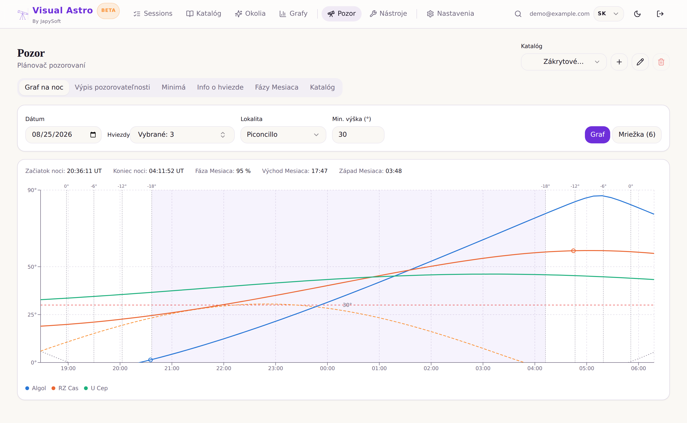
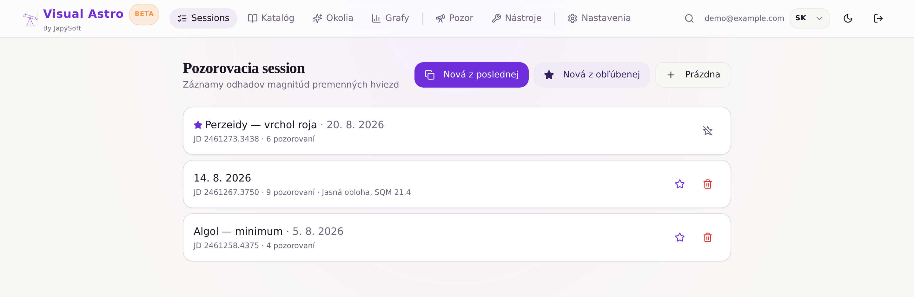

Your variable-star observing logbook, reimagined.
Visual Astro is a modern, web-based tool for visual observers of variable stars. Log sessions, estimate magnitudes with the Nijland–Blažko method, plan your night, and export straight to VSNET and AAVSO — all from your browser.
Free plan included — no credit card required.

Everything a visual observer needs
One tool for the whole workflow — from a fresh session to a finished VSNET/AAVSO export.
Sessions
Start a new observing session in one click — blank, copied from your last session, or from a favorite with times reset.
Personal catalog
Manage your own catalog of variable stars and comparison sequences, organized by constellation.
Nijland–Blazhko method
Enter step estimates and UT times; magnitudes are computed for you automatically.
Pozor — night planning
Altitude charts, night charts, eclipsing-variable minima predictions, a target catalog, and an observability journal.
Conversion table
A spreadsheet-style table of comparison stars. If the user prefers letter labels for comparison stars, the magnitude values are stored here.
Graphs
Visualize light curves and trends across your observing sessions at a glance.
VSNET / AAVSO exports
Generate ready-to-submit VSNET/AAVSO Extended exports, PDF paper templates, and JSON/XLSX data dumps.
Paper OCR
Scan a handwritten observation sheet and let AI fill in object, step values, and UT times for you.
Multi-language UI
Available in several interface languages, so observers around the world feel at home.
How it works
From clear sky to submitted data in a few steps.
Sign up
Create a free account — your personal catalog is seeded automatically.
Start a session
Open a new observing session for tonight, in one click.
Log estimates
Record step values and UT times for each star.
Review magnitudes
Magnitudes are computed automatically as you type.
Export
Send your results to VSNET/AAVSO, or export PDF/JSON/XLSX.
A quick look
Real screens from the app.

Your observing sessions
Start a new session in one click — blank, copied from your last session, or from a favorite.
Plans
Every observer starts on a generous free plan.
All core features, 0.4 GB storage, and 4 AI paper scans per month — for everyone, forever.
Negotiable, higher limits for observatories and teams — reach out to discuss what you need.